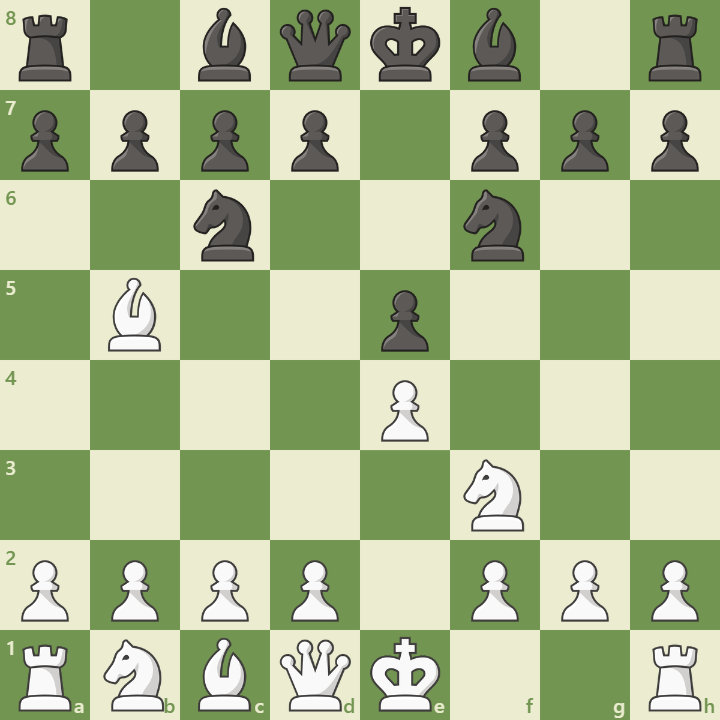

Overview
The Berlin Defense is a solid and strategic response to the Ruy Lopez. It begins with:
1. e4 e5 2. Nf3 Nc6 3. Bb5 Nf6
Black avoids early weaknesses and aims for a strong endgame structure. It gained popularity after Kramnik used it to neutralize Kasparov in their 2000 World Championship match.
Opening Diagram
This position arises after 3...Nf6, challenging White’s center and preparing ...Nxe4.
Main Variations
- Berlin Endgame: 4.O-O Nxe4 5.d4 Nd6 – strategic pawn structure
- d3 System: 4.d3 – avoids early exchanges
- Re1 Line: 4.O-O Nxe4 5.Re1 – tactical pressure
Strategic Themes
- Solid pawn structure and piece coordination
- Endgame-oriented play with long-term plans
- Ideal for positional players and deep preparation